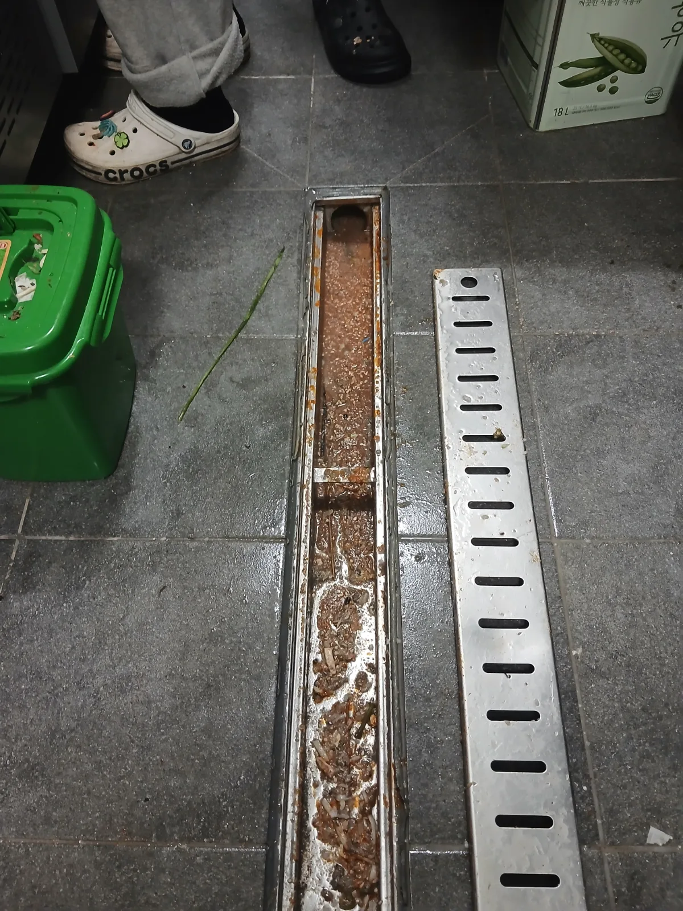

마포구 서교동 하수구막힘, 현장 도착 후 진단
주방 트렌치의 배수가 원활하지 않다는 긴급 요청을 접수한 뒤 필요한 장비를 준비해 마포구 서교동 현장으로 신속하게 출동했습니다. 영업과 주방 사용에 불편이 커지지 않도록 숙련된 막힘 전문 기술자가 현장 상태부터 정확하게 점검했습니다.
트렌치 덮개를 열어보니 내부에는 음식물 찌꺼기와 오염수가 고여 있었습니다. 그러나 신라건축설비는 눈에 보이는 이물질만 치우고 작업을 마무리하지 않습니다. 트렌치 하부의 배수구와 연결 배관까지 확인한 결과, 하수배관 내부에도 별도의 막힌 구간이 형성되어 있었습니다.
마포구 서교동 주방 하수구막힘의 원인을 트렌치 내부 오염과 연결 배관 막힘으로 구분해 진단하고, 각 구간에 필요한 작업을 순서대로 진행했습니다.
1단계: 증상 확인과 필요한 장비 작업
먼저 트렌치 덮개를 분리하고 내부에 쌓여 있던 음식물 찌꺼기와 각종 오염물을 꼼꼼하게 제거했습니다. 배수 입구를 막고 있던 이물질을 정리해 기본적인 물길과 샤프트 장비의 진입 공간을 확보했습니다.
주방 트렌치는 음식물과 오염수가 반복적으로 유입되기 때문에 내부를 제대로 관리하지 않으면 하수구막힘과 악취, 오수 고임이 함께 발생할 수 있습니다. 특히 겉에 보이는 트렌치만 청소하고 연결 배관의 막힘을 그대로 두면 같은 증상이 다시 나타날 가능성이 큽니다.
신라건축설비는 변기막힘·싱크대막힘·하수구막힘을 전문적으로 처리해 온 기술자가 현장을 직접 점검하고, 막힘 위치와 배관 구조에 따라 석션·관통·샤프트·배관 내시경검사·고압세척 중 적합한 공법을 선택합니다.

2단계: 원인 구간 처리와 정상 작동 확인
트렌치 내부를 정리한 후 연결 배관의 배수 흐름을 다시 확인했습니다. 배관 안쪽에서 여전히 강한 저항이 나타나 막힌 구간에 리지드 플렉스샤프트를 투입했습니다.
회전하는 샤프트 체인을 이용해 하수배관 내부에 누적된 이물질을 분쇄하고 벽면을 정리하는 배관스케일링 작업을 진행했습니다. 단순히 배관을 한 번 관통해 좁은 물길만 만드는 방식이 아니라, 막힌 구간을 반복적으로 세척하며 배수가 원활하게 이루어질 수 있도록 작업했습니다.
배관 구조와 장비의 반응을 확인하며 샤프트를 단계적으로 전진시켰고, 막힘 제거 후에는 트렌치에 물을 흘려보내 주방 바닥 배수구에서 연결 하수배관까지 통수가 정상적으로 이어지는지 확인했습니다.

작업 결과와 재발 방지 안내
트렌치 내부의 음식물 찌꺼기와 연결 하수배관의 막힘을 함께 제거해 주방의 배수 흐름을 정상화했습니다. 눈에 보이는 오염물만 청소하는 데 그치지 않고 실제 막힘이 발생한 배관 구간까지 배관스케일링을 진행한 것이 이번 서교동 하수구막힘 해결의 핵심이었습니다.
주방 트렌치는 덮개를 주기적으로 열어 음식물 찌꺼기를 청소하고, 가능한 한 고형물이 배수구 안으로 직접 들어가지 않도록 관리해야 합니다. 트렌치를 청소했는데도 물이 느리게 빠지거나 오수가 다시 고인다면 연결 배관 안쪽의 막힘을 의심해야 합니다.
신라건축설비는 강남·서초·송파·마포를 비롯한 서울 전 지역과 경기권에 신속하게 출동하는 변기막힘·싱크대막힘·하수구막힘 전문업체입니다. 단순한 생활 막힘부터 배관 내시경검사, 석션, 관통, 리지드 샤프트 배관스케일링, 고압세척까지 현장에 맞는 전문 장비로 대응합니다.
점검 과정에서 공용배관이나 메인 오수관의 문제, 배관 파손 및 구조적 결함이 발견되는 경우에도 배관 보수·교체·타공·신설공사까지 자체적으로 연계할 수 있습니다. 막힘을 빠르고 전문적으로 해결하면서 복잡한 배관 문제와 대형 배관공사까지 한 번에 대응하는 것이 신라건축설비의 강점입니다.
최종 조치: 트렌치 덮개를 개방해 내부의 음식물 찌꺼기와 오염물을 제거한 뒤 연결 하수배관의 막힌 구간을 확인했습니다. 이후 리지드 플렉스샤프트를 배관 내부에 투입해 누적 이물질을 분쇄·제거하는 배관스케일링을 진행하고, 작업 후 트렌치와 하수배관의 통수 상태를 최종 확인했습니다.
현장 방문 전 확인하는 비용과 작업 범위
신라건축설비는 현장 증상과 배관 구조를 확인한 뒤 필요한 작업과 예상 비용을 안내합니다. 단순 관통으로 해결되는지, 배관내시경·석션·고압세척 또는 추가 장비가 필요한지는 현장 상태에 따라 달라집니다. 출장비와 야간 작업비, 추가 장비 비용이 발생할 수 있는 경우 작업 전에 먼저 설명하고 동의를 받은 범위에서 진행합니다.
업체를 선택할 때 확인할 사항
무조건적인 ‘0원’ 표현보다 실제 작업 범위, 추가 비용 조건, 사용 장비와 사후 대응 기준을 확인하는 것이 중요합니다. 해결되지 않았을 때의 비용 기준과 작업 후 동일 증상 발생 시 점검 범위를 사전에 문의해두면 불필요한 분쟁을 줄일 수 있습니다.
마포구 하수구막힘 자주 묻는 질문
하수구막힘은 왜 반복되나요?
마포구 서교동 현장처럼 주방 트렌치의 물이 원활하게 빠지지 않고 오수가 고이면서 바닥 하수구를 정상적으로 사용하기 어려운 상태였습니다. 트렌치 표면만 청소해서는 해결하기 어려울 정도로 연결 배관의 배수 흐름도 저하되어 있었습니다. 증상은 원인이 현장마다 다를 수 있습니다. 배관 내부 기름 슬러지·생활 오염물·스케일이 충분히 제거되지 않았거나 오수관·공용배관 구간에 문제가 있으면 반복될 수 있습니다. 재발 시 막힌 위치와 배관 상태를 함께 확인합니다.
하수구가 역류하거나 물이 안 내려가면 하수구뚫는업체를 불러야 하나요?
바닥 배수구가 역류하거나 여러 배수구에서 동시에 물이 빠지지 않으면 단순 배수구 막힘보다 깊은 배관이나 공용배관 문제일 수 있습니다. 전문 장비로 원인 구간을 확인하는 것이 좋습니다.
여러 배수구가 동시에 막히면 공용배관이나 오수관 문제인가요?
동시에 여러 곳에서 배수 불량과 역류가 발생하면 메인배관·오수관·공용배관을 의심할 수 있지만 건물 구조마다 다릅니다. 배관내시경과 현장 진단으로 구간을 구분합니다.
하수구뚫는업체는 어떤 장비로 작업하나요?
현장에 따라 샤프트, 석션, 배관내시경, 고압세척 장비 등을 사용합니다. 단순 관통이 필요한지 배관 내부 세척까지 필요한지는 오염 상태와 막힘 원인에 따라 판단합니다.
하수구 고압세척은 언제 필요한가요?
기름 슬러지나 배관 내부 오염이 넓게 쌓여 반복 막힘이 생기는 경우 고압세척이 효과적일 수 있습니다. 모든 하수구막힘에 고압세척을 적용하는 것은 아니며 먼저 배관 상태를 확인합니다.
하수구막힘 비용은 어떻게 정해지나요?
막힌 위치, 배관 길이와 구경, 공용배관 여부, 내시경·샤프트·고압세척 등 장비 투입 범위에 따라 달라집니다. 추가 작업이 필요한 경우 진행 전에 범위와 비용을 안내합니다.
하수구막힘 서울·경기 출동지역
신라건축설비는 마포구 서교동 현장을 포함해 서울 25개 구와 경기도 31개 시·군의 배관 문제를 상담합니다. 현장 거리와 기사 배정 상황에 따라 출동 가능 여부를 먼저 안내드립니다.
서울 전 지역
강남구 · 강동구 · 강북구 · 강서구 · 관악구 · 광진구 · 구로구 · 금천구 · 노원구 · 도봉구 · 동대문구 · 동작구 · 마포구 · 서대문구 · 서초구 · 성동구 · 성북구 · 송파구 · 양천구 · 영등포구 · 용산구 · 은평구 · 종로구 · 중구 · 중랑구
경기도 주요 출동지역
수원시 · 용인시 · 고양시 · 화성시 · 성남시 · 부천시 · 남양주시 · 안산시 · 평택시 · 안양시 · 시흥시 · 파주시 · 김포시 · 의정부시 · 광주시 · 하남시 · 광명시 · 군포시 · 양주시 · 오산시 · 이천시 · 안성시 · 구리시 · 의왕시 · 포천시 · 양평군 · 여주시 · 동두천시 · 과천시 · 가평군 · 연천군